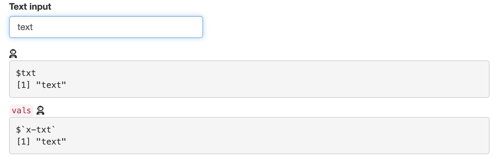

shinymods contains a collection of modules (and helper functions) designed to make creating, using, and testing modules easier. I’ve intentionally kept all the modules minimal, without complex layout functions or additional dependencies, so their behaviors are more predictable.
Installation
You can install the development version of shinymods like so:
install.packages("remotes")
remotes::install_github("mjfrigaard/shinymods")
library(shinymods)Module functions
-
prnt_reactvals(name = , id = , mod = ): creates UI and server code for the reactive values. The UI displays the reactive inputs in averbatimTextOutput()and renders them in the server viareactiveValuesToList()- if
mod = TRUE, thenprnt_reactvals()returns a module with the UI and server code
prnt_reactvals(name = "vals", id = "dev", mod = TRUE) # put in UI ---- mod_vals_ui <- function(id) { ns <- shiny::NS(id) shiny::tagList( # << include additional input IDs >> shiny::icon('user-astronaut'), shiny::verbatimTextOutput( outputId = ns('dev') ) ) } # put in server ---- mod_vals_server <- function(id) { shiny::moduleServer(id, function(input, output, session) { ns <- session$ns output$dev <- shiny::renderPrint({ vals <- shiny::reactiveValuesToList( x = input, all.names = TRUE ) print(vals) }) }) }- if
mod = FALSE, thenprnt_reactvals()returns the UI and server code in ashiny::tagList()(withoutshiny::NS()andshiny::moduleServer())
prnt_reactvals(name = "vals", id = "dev", mod = FALSE) # put in UI ---- shiny::tagList( shiny::tags$code('vals'), shiny::icon('user-astronaut'), shiny::verbatimTextOutput( outputId = 'dev' ) ) # put in server ---- output$dev <- shiny::renderPrint({ vals <- shiny::reactiveValuesToList( x = input, all.names = TRUE ) print(vals) }) - if
To view how these modules work, run reactValsDemo()

get_flat_data(name, id, mod = TRUE, return_data = TRUE): imports external data files into a shiny application.get_xlsx_data(name, id, mod = TRUE): imports external excel files into a shiny applicationdisp_reactable_table(name, id, mod = TRUE): displays data in areactabletabledisp_dt_table(name, id, mod = TRUE): displays data is aDTtable.